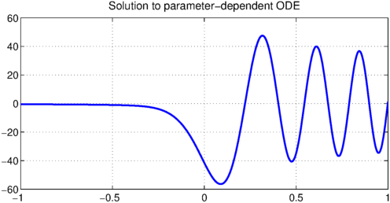
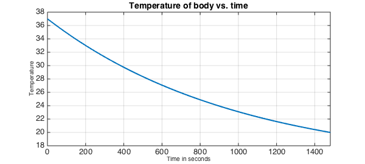
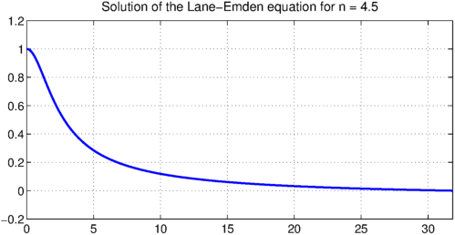

There are many examples of parameter-dependent ODEs such as simple harmonic motion and Lotka-Volterra equations. If a parameter is unknown then the problem can be recast as a system. However, Chebfun also allows the user to input the parameter-dependent ODE without explicitly rewriting the ODE as a system. Below are three such examples.
1. Toy Example
Let's take the parameter-dependent ODE given by,
$$ 0.001u'' + xu + a = 0, \qquad u(-1) = -a - 1, \quad u'(-1) = 0, \quad u(1) = 1. $$
The extra condition is required in order to solve for the unknown parameter. Here is how to solve it in Chebfun without recasting as a system.
LW = 'LineWidth'; FS = 'FontSize';
N = chebop(@(x,u,a) 0.001*diff(u,2) + x.*u + a);
N.lbc = @(u,a) [u + a + 1; diff(u)];
N.rbc = @(u,a) u - 1;
ua = N\0
plot(ua{1},LW,2); title('Solution to parameter-dependent ODE',FS,16);
a = ua{2}
ua =
2 x 1 chebmatrix of block types:
'chebfun'
'double'
a =
-0.491596775149596

2. Newton's Law of Cooling
During the Jack the Ripper murder investigations in the 1880s, detectives estimated the time of death of a victim by using body temperature. Upon finding the victim, body temperature was measured. If the body was warm then the murder had only just occurred. If the body was cold then it happened many hours before. To make this more precise, take Newton's Law of cooling which is $$ y' + k(y-S) = 0, \qquad y(0) = y_0. $$
where $y$ is the temperature of the body, $S$ is ambient temperature, and $k$ a cooling parameter. Suppose that the body was murdered at $t=0$ at a temperature of 37 celsius and found at $t=T$ at a temperature of 20 celsius. Find the time of death?
k = 1e-3; % Cooling parameter
S = 15; % Ambient temperature
t0 = 37; % Initial temperature
tT = 20; % Discovery temperature
% Rescale the equation by x=t/T to form parameter-dependent ODE.
N = chebop(@(x,y,T) diff(y) + k.*T.*(y-S),[0,1]);
N.lbc = @(y,T) y-t0;
N.rbc = @(y,T) y-tT;
% Solve
yT = N\0;
% Rescale solution and plot
yT1 = yT{1}; yT2 = yT{2};
T = yT2(1); t = chebfun(@(t) t/T,[0 T]); y = yT1(t);
plot(y,LW,2), title('Temperature of body Vs. Time',FS,16);
xlabel('Time in seconds',FS,10), ylabel('Temperature',FS,10);
fprintf('T is estimated to be %1.2f hrs.\n',yT2(1)/360)
T is estimated to be 4.12 hrs.

From the estimate of $T$ we are able to calculate the time of the murder given the time the body was found. The detectives in the 19th century didn't always get the time of the murder correct.
3. Lane-Emden Equation from Astrophysics
The Lane-Emden equation from Astrophysics is $$ x u'' + 2 u' + x u^n = 0, \qquad u'(0) = 0, \quad u(0) = 1. $$
The first root of the solution is important and since this is unknown it can be introduced by scaling the independent parameter-dependent ODE. The unknown parameter is then the first root of the solution [2]. The equation has a weak singularity at the right end of the interval and we perturb it by $10^{-12}$ to make the problem easier to solve.
n = 4.5;
%Parameter-dependent ODE
N = chebop(@(x,u,v) x.*diff(u,2) + 2*diff(u) + x.*v.^2.*(u+1e-12).^n,[0 1]);
N.lbc = @(u,v) [u-1;diff(u)];
N.rbc = @(u,v) u;
%Choose initial condition.
x = chebfun(@(x) x,[0 1]);
N.init = [cos(pi/2*x);3];
%Solve
uv = solvebvp(N,0);
uv1 = uv{1}; uv2 = uv{2};
%Rescale solution and plot.
t = chebfun('t',[0,uv2(1)]); u = uv1(t./uv2(1));
plot(u,LW,2), hold on;
title('Solution of the Lane-Emden equation for n = 4.5',FS,16),
Warning: Newton iteration failed. Maximum number of iterations exceeded. See help cheboppref for how to increase the number of steps allowed.

Let's compare the computed first root for $n = 4.5$ to the result in [1]:
norm(uv{2} - 31.836463244694285264)
ans =
6.412186337456660e-10
References
-
Chebyshev Spectral Methods and the Lane-Emden Problem by John Boyd.
-
Chebfun Example ode/LaneEmden